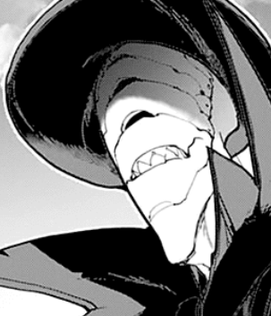
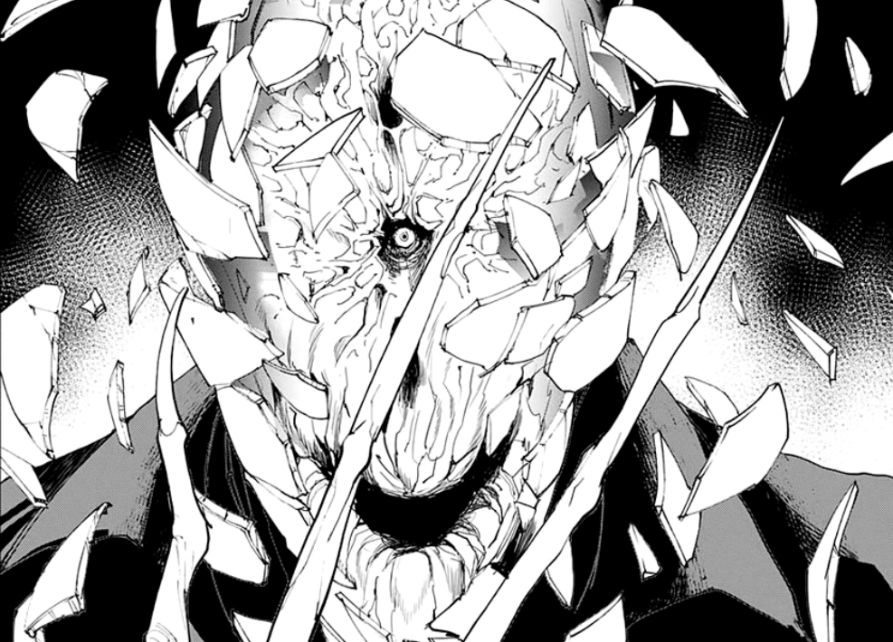

You glare at him intensely and reply. 
"You don't know anything about us. MY family did that to protect me."
He growls at your answer and his voice suddenly changes while approaching you.
"Give me that vial."
So this is what he was after. His demonic presence makes you quiver but alas, there was nothing you could do. Your defenseless satchel to your side screams 'the potion is here!' and as expected, he takes it right from you.
"Finally. After all these years, I'll finally be a real demon and you will all die by my hands."

He unplugs the cork on the vial but suddenly, a bullet pierces through his mask, shattering it completely. Alarmed he looks to the left and spots Nicholas.
Out of his sight, you've broken free from being subdued and catch the falling glass.
With the opportunity within your hands, do you drink it or splash it on the ground?